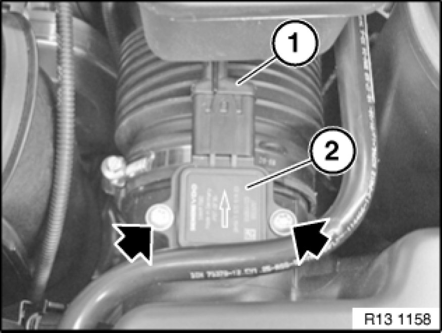

Removing and Installing/Replacing Air-Mass Flow Sensor (N52/N52K/N53)
13 62 560 - Removing and installing/replacing air-mass flow sensor (N52/N52K/N53)

Necessary preliminary tasks:
- Read out fault memory of DME control unit
- Switch off ignition

Release screws.
Unlock plug (1) and remove.
Pull air-mass flow sensor (2) out of upper section of intake filter housing.
Installation:
Screws - tightening torque 13 62 8AZ 13 62 Senders for Control Unit

Note:
Check stored fault message.
Now clear the fault memory.